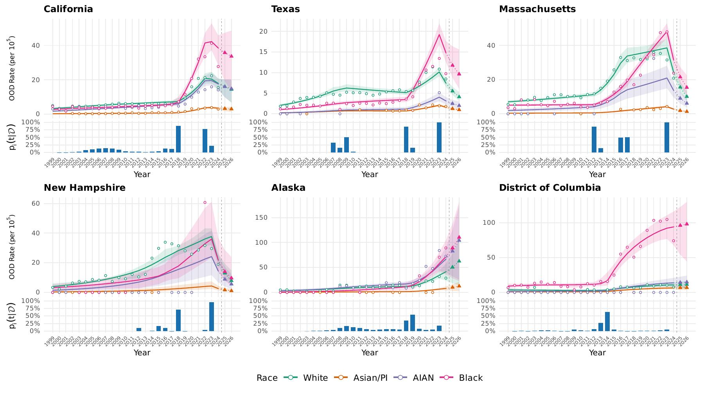

Under review
Bayesian ACCESS for Understanding Latent Epidemic Trajectories from Publicly Released Suppressed Data: Application to U.S. Opioid-related Overdose Mortality.
Bayesian ACCESS infers latent epidemic trajectories and change points from public mortality data with privacy-driven count suppression.